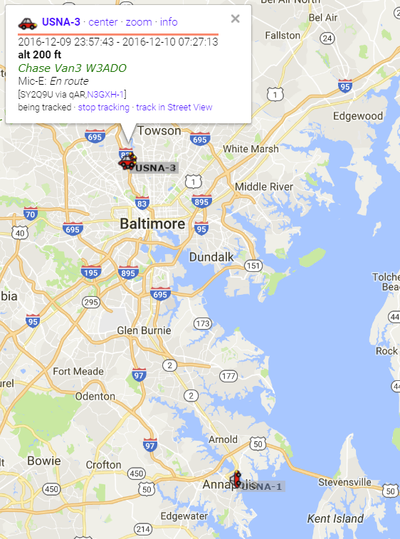

Naval Academy Radio Club's
Naval Academy Radio Club's

2017 Army/Navy Football Run LIVE Tracking Page
USNA Satellite Ground Station, Bob Bruninga, WB4APR
W3ADO Radio Club,
Naval Academy Radio Club's
USNA Satellite Ground Station, Bob Bruninga, WB4APR
W3ADO Radio Club,
 Annual 13th Company Football Run: At noon Friday, 8 Dec, almost 150 midshipmen from the 13th Company began running the Army/Navy game football 125 miles from Annapolis to the stadium in Philly to arrive the next morning for the Saturday Game. This page is constantly in work to keep up to date, so if it does not work for you now. Try again in a few minutes..
USNA Radio Club Communications: For the last 32 years, the USNA Radio Club, W3ADO (one of the oldest ECA at USNA since 1928), with the help of the AERO Satellite Lab, maintains comms and tracking of the runners using the same kind of amateur radio GPS position reporting technology used in the Academy's student satellite projects. The small cadre of FCC licensed and other interested midshipmen in the USNA radio club, W3ADO, provide communications support for the Brigade during this Football tracking event and the midshipmen Sea Trials in the spring.
LIVE POSITION: Click these links to see the current positions such as the old map from 2016 shown at right.. Always be careful to look at the date and time to make sure the data is current.
Actually, once you are on the google page, you can also simply hit the select all link to include all hamradio callsigns on the same map, then zoom around to see all surrounding vehicles. You will also see all of the other Ham radio operators using our APRS tracking system developed here at USNA.
The remainder of this page shows how we used to do it, starting with hand-drawn maps back in about 1996 through about 2005 or so. Then we started simply linking to Google maps to do the plotting. Please also see how our on-board camera Automatic Picture Relay Network (APRN) can now work (though not implemented on the chase van this year).
Go Navy - Beat Army from Space: In 2005, the USNA radio club made contact with the crew of the space station and bantered lively about the game. See the 2005 details or hear the audio.
This system is called the Automatic Position Reporting System (APRS) and is operated entirely by volunteer Amateur Radio operators. Over 30,000 ham radio operators worldwide use this system routinely for public service and disaster preparedness. All you need to know is someone's callsign and if they are transmitting their APRS position, then APRS can not only find them, but the network also supports brief messaging as well. The satellite images are from on-line databases and the web page overlays the live GPS coordinates on them.
The Remainder of this page is not being used this year
Remote Amateur Radio Ken-Cam LIVE Images (2002):
The following section was updated in real time* via amateur radio link whenever new images were received from the lead vehicle. Most images were taken by the handheld Ken-Cam during changes in runners at each of the legs. (Also, see 1998's Photos). 1999's Photos). Here are the new photos as they came in via HAM radio:.
These images are transmitted back live via Amateur radio using what is called SSTV, Slow Scan TV. HAMS have been doing this for over 30 years, but now with WEB technology, we can instantly post these live images to our WEB page too...
APRN BACKGROUND: APRN (Automatic Picture Relay Network) is a live amateur radio channel for the transmission of remote KEN-CAM images. We can even automatically place the station on the map if he uses an attached GPS unit. Thus this APRN web page is automatic and catalogs, indexes and makes available images instantly. There is no better mechanism than APRN for diseminating real-time, in-the-field images from amateur radio operators in support of emergencies or public service events. APRN augments the worldwide APRS amateur radio position reporting and mesaging system by giving vision to remote and mobile operations.
APRN is a concept presented by Bob Bruninga, WB4APR at the Digital Communication Conference in Chicago, 25 September 1998 and his robotic VISION system presented at the DCC in Baltimore, Sept 1997.
Here is also a replay of the 1993 Army-Navy game football run to NJ Meadowlands
And here is a picture of the original GPS tracker built into a football helmet.
| SAT-STATION | APRN Annapolis |
|
{kind=link}
{kind=link}
{kind=link}
{kind=link}
{kind=link}
{kind=link}
{kind=link}
{kind=link}